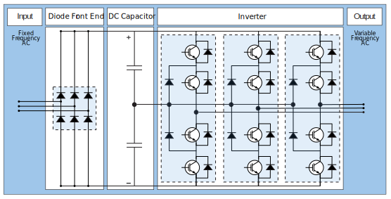
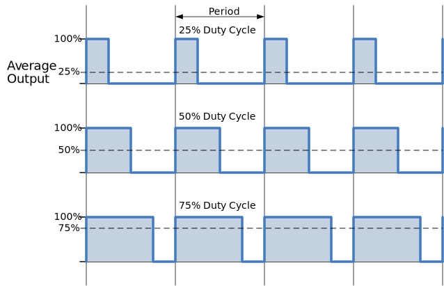
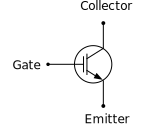

Propulsion Converters are very large variable frequency drives, electronic devices that take fixed frequency AC from the main switchboard and convert it to the variable voltage and frequency required to drive the propulsion motor at the desired speed.
A basic variable frequency drive has three main components:
The Diode Front End which takes in an AC power supply from the mains and converts it into DC power using a three-phase rectifier.
The DC Capacitor The rectified power is stored in a large capacitor, which acts as a buffer to provide a stable DC voltage to the DC Bus.
The Inverter The inverter is responsible for converting the DC power back into AC power with variable voltage and frequency. This stage utilizes power electronic devices, such as insulated gate bipolar transistors (IGBTs), to switch the DC voltage in a controlled manner.
To synthesize the desired AC waveform, the VFD uses a technique called Pulse Width Modulation (PWM). PWM involves rapidly switching the IGBTs on and off to create a series of voltage pulses with varying widths. By adjusting the width of these pulses, the VFD can control the effective voltage and frequency of the output AC waveform.

Figure8.3.2.Main Components of a VFD
By regulating the voltage and frequency supplied to the motor, a VFD allows for precise control of motor speed and torque. This enables energy savings, improved motor performance, and enhanced control in various applications, such as industrial machinery, HVAC systems, and electric vehicle drives.
What is Pulse Width Modulation?
Pulse Width Modulation (PWM) is a technique used in electronics to control the average value of a signal. PWM works by rapidly turning a signal (usually a square wave) on and off. The overall effect is that the signal appears to have varying average voltage or power, depending on the width of the on or high portion of the signal.
The duty cycle is a parameter of PWM that represents the percentage of time the signal is on or at a high level compared to the period — the time to complete one cycle. It determines the average value of the signal. A duty cycle of 50% means the signal is on for half the time and off for the other half, resulting in an average voltage or power that is halfway between the high and low levels. By changing the duty cycle, the average value of the signal can be controlled. Increasing the duty cycle increases the average value, while decreasing the duty cycle decreases the average value.

PWM requires a control signal that determines the desired average value. This control signal could come from a microcontroller, analog circuit, or other control systems.
The PWM signal is often passed through a low-pass filter. The filter averages out the rapid switching of the signal, resulting in a smoother output signal with the desired average value.
What is an IGBT?
An IGBT (Insulated Gate Bipolar Transistor) is a power semiconductor device that combines the characteristics of a MOSFET (Metal-Oxide-Semiconductor Field-Effect Transistor) and a bipolar junction transistor (BJT). IGBTs are known for their high voltage and current handling capabilities, low conduction losses, and fast switching speeds. IGBTs can rapidly switch on and off in the range of microseconds to a few tens of nanoseconds. They are widely used in high-power electronic applications, such as motor drives, power converters, and inverters.

The operation of an IGBT involves three main states:
Off State When no voltage is applied to the gate, the IGBT is in an off state, and only a small leakage current flows from the collector to the emitter. It behaves like an open switch or closed valve.
On State When full voltage is applied to the gate with respect to the emitter, current freely flows from the collector to the emitter. This is the on state of the IGBT, and it can conduct high currents like a closed switch.
Control State The IGBT can be controlled by applying a variable voltage to the gate. When a positive voltage is applied, it turns on the IGBT, allowing current flow. By adjusting the gate voltage, the IGBT can regulate the current flow.